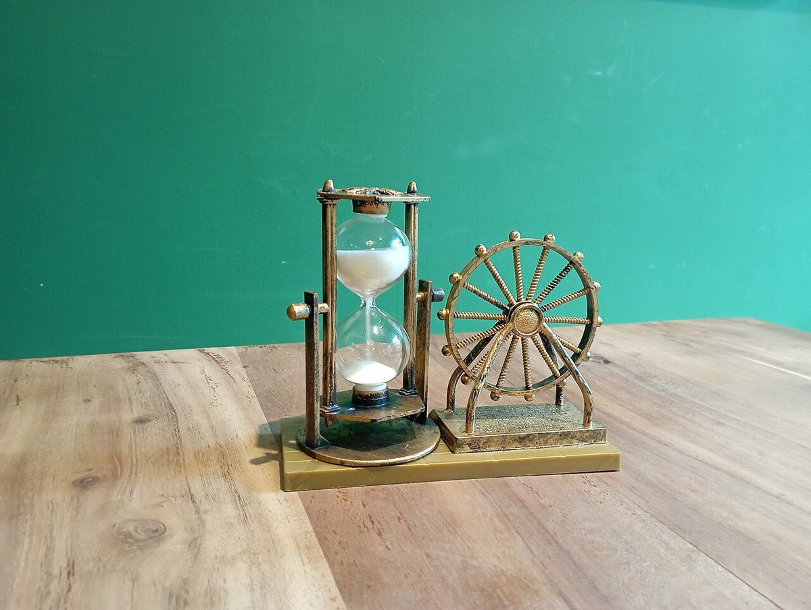

店のこと
店のこと
お店について確認できているのは、所在地とInstagramのアカウントだけです。
写真の組み合わせは制作側が考えたもので、お店の実際の様子・考え・メニューとは関係がありません。
確認できていること
- 店名は「cafe橙」、業種はカフェ
- 所在地は北海道岩見沢市4条東2丁目1-1(〒068-0004)
- 電話番号はなし。連絡はInstagramから
- 営業時間・定休日・メニュー・価格・ご予約・駐車場は準備中
写真(イメージ)
ふたつの間(ま)
二つ一組で並べた、フリー素材のイメージです。実際のお店とは関係ありません。
黒い一杯が二つ(イメージ)


時を測る二つ(イメージ)
